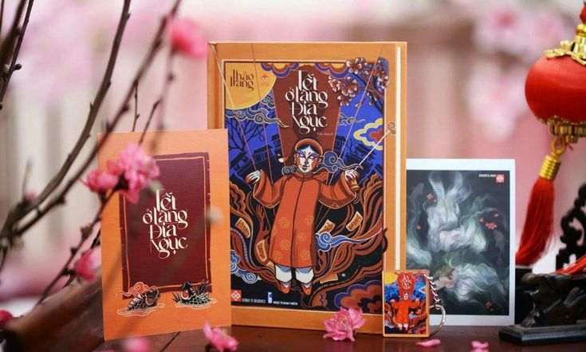
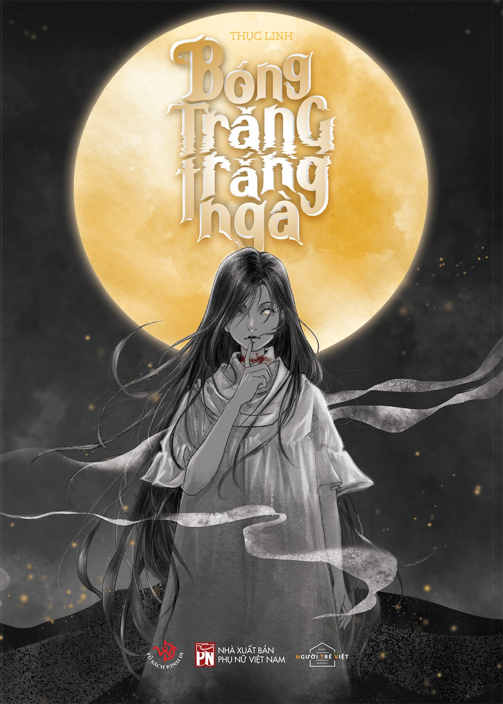

Truyện kinh dị Việt Nam
Những câu chuyện kinh dị ở Việt Nam
Đặc điểm
Truyện kinh dị ở Việt Nam nổi bật νới các yếu tố tâm linh dân gian, ma quỷ, bùa ngải và truyền thuyết đô thị.
Một vài tác phẩm tiêu biểu

Tết ở làng Địa Ngục-tác giả Thảo Trang
Tết ở làng Địa Ngục kể về những biến cố xảy ra trong một ngôi làng bí ẩn mỗi dịp Tết đến, nơi các hủ tục, lời nguyền và tội lỗi quá khứ dần bị phơi bày. Câu chuyện truyền tải thông điệp về nhân quả, sự trả giá cho tham vọng và bóng tối trong lòng người ẩn sau lớp vỏ truyền thống tưởng như yên bình.

Bóng trăng ngà - tác giả Thục Linh
"Bóng trăng trắng ngà" là hành trình đầy ám ảnh đưa độc giả về vùng quê Bắc Bộ xưa, nơi những hủ tục lạc hậu và tà thuật cổ quái đan xen. Câu chuyện xoay quanh những bí mật kinh hoàng bị chôn giấu dưới ánh trăng, nơi ranh giới giữa người và ma trở nên mong manh hơn bao giờ hết.